圖示物品名特殊效果取得方式
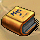 童話手稿暢銷的童話任務物品任務取得 ( 彩虹城 )
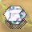 完美的白寶石暢銷的童話任務物品任務取得 ( 伊利村 )
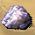 夢幻礦石司楚的礦石任務物品哈啾島打怪隨機掉落
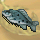 野生石班魚野生石班魚任務物品天鵝湖隨機打幻獸取得
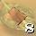 波特散落族譜散落的族譜任務物品白雪森林打怪隨機掉落
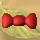 海馬蝴蝶結貪玩的小美人魚任務物品史蓋窩克海打金海馬
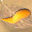 貝殼眉毛貪玩的小美人魚任務物品尼克草原打木頭貝貝
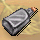 特殊藥劑貪玩的小美人魚任務物品任務取得 ( 史蓋窩克海 )
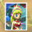 小美人魚的照片相思病任務物品任務取得 ( 史蓋窩克海 )
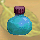 戀愛神水自由意志任務物品任務取得 ( 史蓋窩克海 )
 鵝型游泳圈不會游泳的真相任務物品任務取得 ( 貝伯港 )
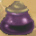 人魚變身劑種族的隔閡任務物品任務取得 ( 史蓋窩克海 )
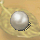 銀球被搶奪的銀球任務物品鳳梨山打火艾波
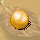 金球保球一族任務物品任務取得 ( 青蛙沼澤 )
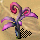 正百年通天草保球一族任務物品任務取得 ( 鳳梨山 )
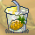 鳳梨果汁尋找愛麗絲任務物品任務取得 ( 夢想花園 )
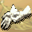 小白手套忙碌的遲到兔任務物品西迷路森林打金盞菊
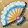 扇子忙碌的遲到兔任務物品西迷路森林打愛水虎
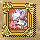 快樂的畫像逃走的睡鼠任務物品任務取得 ( 東迷路森林 )
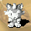 被封印的微笑貓微笑貓任務物品任務取得 ( 南貓咪森林 )
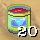 紅色染料悲情的士兵任務物品南貓咪森林向 NPC 標價購得
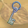 牢房的鑰匙悲情的士兵任務物品任務取得 ( 玫瑰園 )
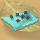 暴力兔的便便大逃亡任務物品北貓咪森林打暴力兔
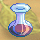 喚醒果汁大逃亡任務物品任務取得 ( 門之迷宮B1 )
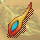 鳳凰羽毛刀狂進階技任務物品咕嚕島打木鳳凰
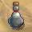 光窩蟲液體狂戰士進階技任務物品趴趴迷宮B2打光窩蟲
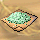 忘了我是誰 | | | | | | | | | | | | | | | | | | | | | | | | | | | | | | | | | | | | | | | | | | | | | | | | | | | | | | | | | | | | | | | | | | | | | | | | | | | | | | | | | | | | | | | | | | | | | | | | | | | | | | | | | | | | | | |